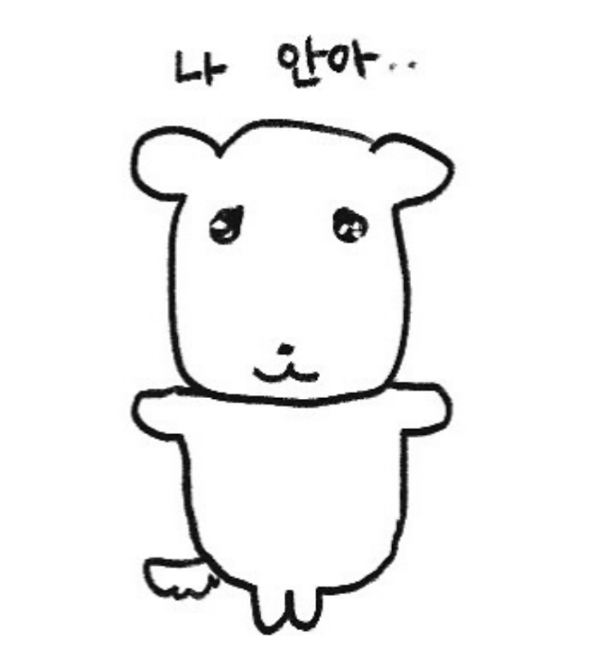

일본 정상급 가수들이 'K팝 성지'로 몰려들고 있다. 국내 음악 시장에서 J팝의 인기가 점차 커지고 팬덤이 확장되면서, 거물급 J팝 스타들이 공연을 위해 한국을 찾고 있다. 이들은 떴다 하면 '완판'이다.  지난달 22일과 23일에 인천 인스파이어 아레나에서 열린 요네즈 켄시의 첫 내한 공연에 2만 2000여명의 관람객이 몰리며 전석이 매진됐다. 2018년 일본 드라마 '언내추럴' 주제가인 '레몬', 넷플릭스 애니메이션 '체인소맨' 오프닝곡 '킥 백(KICK BACK)' 등 히트곡은 국내 관객의 떼창을 불러일으켰고 이 영상은 SNS에서도 화제를 모았다.